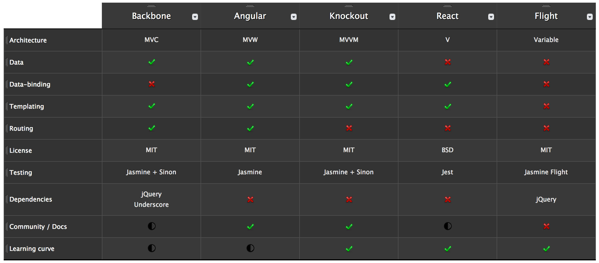

Scalable JavaScript Architecture
Vitaly Kondratiev
November 2014
@vitkon
Building for the Web
sometimes feels like...
Today's challenges
Browser release cycles measured in weeks
- More features introroduced every year than during the entire decade '00 — '09
- Generational gap is huge
- Not all features are good to use
Tomorrow's challenges
New platforms and form factors
How did we get there?
The secrect of building large apps
is never build large apps.
Break your app into small pieces.
Then assemble those testable, bite-sized pieces
into your big application
What are we looking for?
- Loosely coupled architecture
- Smaller independent modules
- Flexibility to change
- Better QA processes
Modularity
- Essential foundational pattern
- Simplify maintenance
- Simplify testing
- Reduce ramp-up time for new devs
// package/lib is a dependency we require
var lib = require('package/lib');
// some behaviour for our module
function foo(){
lib.log('hello world!');
}
// expose foo to other modules
exports.foo = foo;
AMD / CommonJS + Browserify
Module pattern
Object literal
Pub / Sub with jQuery
/* notification module */
$(document).on('newMessage', function (event, data) {
displayNewMessageNotification(data);
});
/* mailCheck module */
$(document).trigger('newMessage', {msg: 'hello world'});
Modules
Consider separate
UI and Data components
Only Data component communicates
with the back-end
Testability
- Reduces long-term maintenance costs
- Helps to reinforce separation of concerns
- Provides a mechanism for generating code quality metrics
Reusability
Less coupling === easier reuse
- Generic modules
- Mixins
- Templates
- Data models
Consider Isomorphism
- Rendr (Airbnb)
- Kraken (Paypal)
- Mojito (Yahoo)
- Meteor
- Derby
- MEAN stack
Isomorphic app prerequisites
- Same language on Client and Server (JS, Dart, ClosureScript)
- Isomorphic module loader (browserify)
- Isomorphic libraries (React.js)
- Knowledge (single repo, dependency injection)

Library vs Framework
- Library: non-prescriptive, loose patterns, anything possible
- Framework: prescriptive, strict patterns, enforces correctness through architecture
Frameworks
- Angular
- Ember
Libraries
- Backbone
- Knockout
- Flight
- React
- Polymer
Future-resilient architecture
Leverage modern features
Allows to make right decision fast
But doesn't tie you in to it forever
Isolate developers from the bad and broken parts of the platform
Providing good abstraction where required
Follow the crowd
when choosing a framework
A limited test drive
doesn't push the limits of a framework
Too agile
skipping the design phase
Front-End architecture
as an afterthought
The paradox of choice

All valid choices
it all depends on the task
- Angular
- Backbone
- Ember
- Flight
- Knockout
- Polymer
- React
Start comparing apples to apples
More things to consider
- I18n
- A11y
- Authorisation
- 3rd party integrations
- Data validation
- ORM
- Team expertise